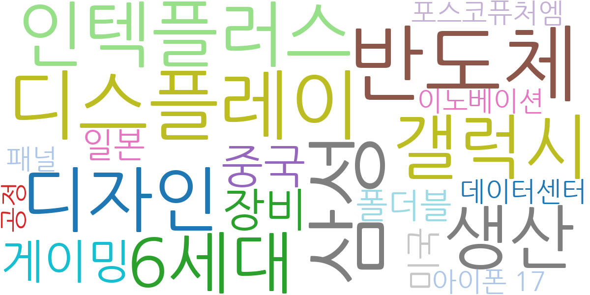
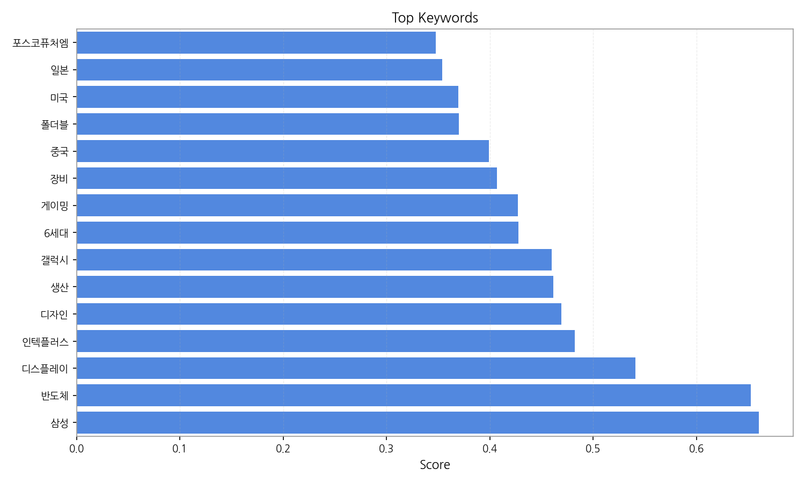
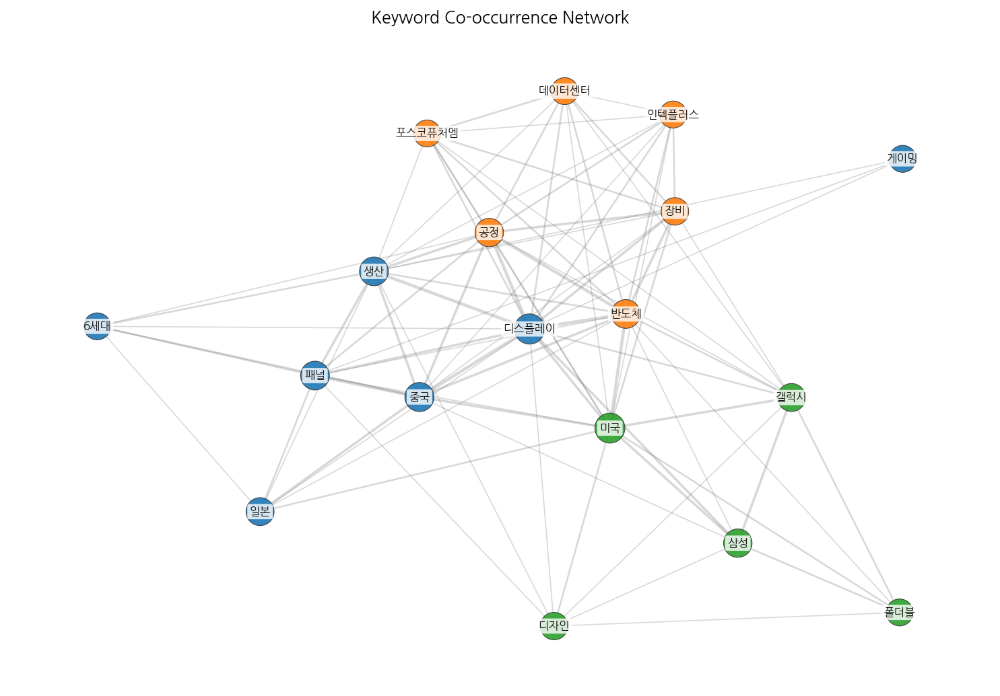
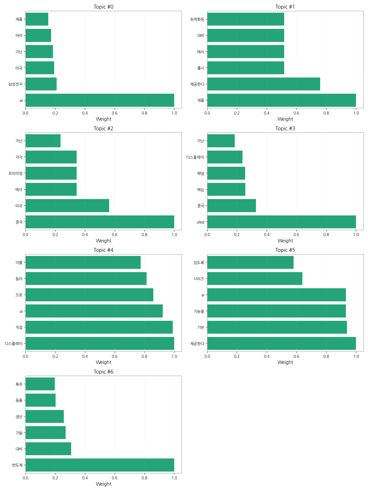
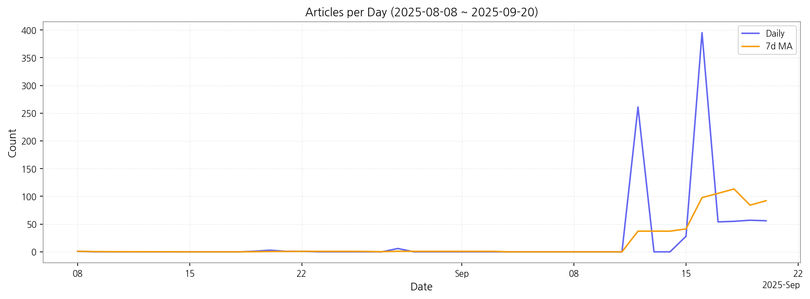

1) 상위 토픽을 3개 주제로 묶어 핵심 맥락을 설명하면 다음과 같습니다. 첫째, AI 기반 제품 출시 및 삼성전자의 미국 시장 공략이 주요 뉴스를 차지하고 있습니다. AI 기술을 활용한 새로운 제품 기능과 에너지 효율 향상에 대한 내용이 주를 이루며, 특히 삼성전자의 미국 시장 진출 및 경쟁 전략에 대한 기사가 많았습니다. 둘째, 중국과의 경쟁 속에서 프리미엄 OLED 디스플레이 시장을 둘러싼 기술 경쟁과 생산 현황이 중요한 이슈입니다. 중국 업체들과의 경쟁 심화와 프리미엄 시장 점유율 확보를 위한 기술 개발 및 생산 능력 확대에 대한 내용이 주로 다뤄졌습니다. 셋째, 디스플레이 분야에서 AI 기술의 직접적인 활용과 반도체 기술 발전에 대한 뉴스가 꾸준히 등장했습니다. AI 기반의 디스플레이 기술 개발 및 반도체 생산 기술 향상에 대한 기사들이 다수 포함되어 있으며, 이를 통해 제품 경쟁력 강화 및 시장 확대를 위한 노력을 보여줍니다.
2) 최근 변화/스파이크를 짚어보면, 9월 12일부터 9월 16일 사이에 기사 수가 급증했습니다. 이는 특정 시점에 삼성전자의 새로운 AI 기반 제품 출시 발표나 중국과의 기술 경쟁 관련 중요한 뉴스가 보도된 것으로 추정됩니다.
3) 실무 인사이트 3가지:

| Rank | Keyword | Score |
|---|---|---|
| 1 | 삼성 | 0.660 |
| 2 | 반도체 | 0.653 |
| 3 | 디스플레이 | 0.541 |
| 4 | 인텍플러스 | 0.482 |
| 5 | 디자인 | 0.469 |
| 6 | 생산 | 0.462 |
| 7 | 갤럭시 | 0.460 |
| 8 | 6세대 | 0.428 |
| 9 | 게이밍 | 0.427 |
| 10 | 장비 | 0.407 |
| 11 | 중국 | 0.399 |
| 12 | 폴더블 | 0.370 |
| 13 | 미국 | 0.369 |
| 14 | 일본 | 0.354 |
| 15 | 포스코퓨처엠 | 0.347 |




1) 상위 토픽을 3개 주제로 묶어 핵심 맥락을 설명하면 다음과 같습니다. 첫째, AI 기반 제품 출시 및 삼성전자의 미국 시장 공략이 주요 뉴스를 차지하고 있습니다. AI 기술을 활용한 새로운 제품 기능과 에너지 효율 향상에 대한 내용이 주를 이루며, 특히 삼성전자의 미국 시장 진출 및 경쟁 전략에 대한 기사가 많았습니다. 둘째, 중국과의 경쟁 속에서 프리미엄 OLED 디스플레이 시장을 둘러싼 기술 경쟁과 생산 현황이 중요한 이슈입니다. 중국 업체들과의 경쟁 심화와 프리미엄 시장 점유율 확보를 위한 기술 개발 및 생산 능력 확대에 대한 내용이 주로 다뤄졌습니다. 셋째, 디스플레이 분야에서 AI 기술의 직접적인 활용과 반도체 기술 발전에 대한 뉴스가 꾸준히 등장했습니다. AI 기반의 디스플레이 기술 개발 및 반도체 생산 기술 향상에 대한 기사들이 다수 포함되어 있으며, 이를 통해 제품 경쟁력 강화 및 시장 확대를 위한 노력을 보여줍니다.
2) 최근 변화/스파이크를 짚어보면, 9월 12일부터 9월 16일 사이에 기사 수가 급증했습니다. 이는 특정 시점에 삼성전자의 새로운 AI 기반 제품 출시 발표나 중국과의 기술 경쟁 관련 중요한 뉴스가 보도된 것으로 추정됩니다.
3) 실무 인사이트 3가지:
| Idea | Target | Value Prop | Score |
|---|---|---|---|
| AI 기반 디스플레이 품질 검사 플랫폼 (KR) | 한국 디스플레이 제조사 (LG디스플레이, 삼성디스플레이 등) 생산/품질관리 부서, 중견/대기업 규모 | AI 기반 자동화 시스템으로 불량률을 최대 30% 감소시키고, 검사 시간을 50% 단축하여 생산성을 향상시킵니다. 차별화 포인트는 실시간 데이터 분석을 통한 예측적 품질 관리 기능 제공입니다. | 4.50 |
| 모빌리티 디스플레이 제조 파트너십 (KR) | 한국 자동차 부품 제조사 및 디스플레이 제조사, 대기업 규모 | 국내외 디스플레이 제조 기술 및 생산 능력을 결합하여 모빌리티 디스플레이 시장 경쟁력을 강화합니다. 차별화 포인트는 특수 환경(고온, 저온, 진동)에 강한 내구성을 갖춘 디스플레이 제조 기술 개발입니다. | 4.20 |
| OLED 패널 조달 플랫폼 (JP) | 일본 전자제품 제조사 (소니, 파나소닉 등) 조달/구매 부서, 중견/대기업 규모 | 다양한 OLED 패널 공급업체를 연결하여 최적의 가격과 품질의 패널을 조달할 수 있도록 지원합니다. 차별화 포인트는 블록체인 기반의 투명한 거래 시스템을 제공하는 것입니다. | 4.00 |
| AI 기반 사이니지 광고 플랫폼 서비스 (EU) | 유럽 지역 사이니지 광고 대행사 및 미디어 기업, 중소/중견기업 규모 | AI 기반의 실시간 데이터 분석을 통해 광고 효과를 측정하고, 최적의 광고 타겟팅 전략을 제시합니다. 차별화 포인트는 위치 기반 광고 및 개인 맞춤형 광고 기능입니다. | 3.80 |
| 디스플레이 제조 공정 데이터 분석 서비스 (JP) | 일본 디스플레이 제조사 (샤프, JDI 등) 생산 관리 부서, 중견/대기업 규모 | AI 기반의 머신러닝 알고리즘을 활용하여 디스플레이 제조 공정 데이터를 분석하고, 생산성 향상 및 불량률 감소를 위한 최적의 솔루션을 제공합니다. 차별화 포인트는 실시간 예측 분석 기능을 통한 선제적 문제 해결입니다. | 3.50 |